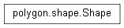

Shape¶

-
class
Shape(canvas, tag='', color='')[source]¶ Displays the polygon objects onto the canvas by supplying draw methods and maintaining internal information on the shape. Draws to matplotlib backend
-
add_attribute(attr)[source]¶ Append a passed attribute onto the internal attribute list
Parameters: attr (str) – An attribute enum
-
anchor_rectangle(event)[source]¶ Establishes a corner of a rectangle as an anchor for when the user drags the cursor to create a rectangle. Used in ‘Draw Rect’ button
Parameters: event – A matplotlib backend event object
-
draw(fig, plot=<Plot.baseplot: 0>, fill=False)[source]¶ Draw the shape to the canvas, onto the passed figure. Only fill the object if the fill parameter is set to
TrueParameters: - fig – A
SubplotAxesobject from the matplotlib backend - plot –
constants.Plotenum specifying which plot the object belongs to - fill (bool) –
Falsefor fill,Truefor outline
- fig – A
-
fill_rectangle(event, plot, fig, fill=False)[source]¶ Draws the rectangle and stores the coordinates of the rectangle internally. Used in ‘Draw Rect’ button. Forwards argument parameters to
drawParameters: - fig – Figure to draw canvas to
- fill (bool) – Whether to fill or no fill the shape
-
get_coordinates()[source]¶ Return the list of coordinates internally maintained by shape
Return type: list
-
get_itemhandler()[source]¶ Return the item handler object to the actual backend base
Return type: matplotlib.patches.polygon
-
is_attribute(attr)[source]¶ Return
Trueif attr is inside the attributes list,Falseotherwise.Parameters: attr (str) – Return type: bool
-
loaded_draw(fig, fill)[source]¶ Called in the case of panning the plot, since panning the plot invalidates the previous figure, the figures must first be cleared and the shapes are removed. Loaded draw draws the shapes back into view using a new figure.
Parameters: - fig – A
SubplotAxesobject to add the patch to - fill (bool) – Boolean value whether to have the shape filled in when drawn to or not
- fig – A
-
paint(color)[source]¶ Changes the color of the shape and saves it internally
Parameters: color – the new color of the shape
-
plot_point(event, plot, fig, fill=False)[source]¶ Plot a single point to the shape, connect any previous existing points and fill to a shape if the current coordinate intersects the beginning point.
Parameters: - event – A
matplotlib.backend_bases.MouseEventpassed object - fig – The figure to be drawing the canvas to
- fill (bool) – Whether the shape will have a solid fill or not
- event – A
-
redraw(fig, fill)[source]¶ Function to draw the shape in the event the shape may or may not already be drawn. Checks if the image already exists, if not draws the image
Parameters: - fig – A
SubplotAxesobject to add the patch to - fill (bool) – Boolean value whether to have the shape filled in when drawn or not
- fig – A
-
remove()[source]¶ Wrapper function to internally call matplotlib backend to remove the shape from the figure
-
remove_attribute(attr)[source]¶ Remove an attribute as specified in
constants.pyfrom the internal attributes variableParameters: attr (str) –
-
rubberband(event)[source]¶ Draws a temporary helper rectangle that outlines the final shape of the rectangle for the user. This draws to screen coordiantes, so backend is not needed here.
Parameters: event – A matplotlib.backend_bases.MouseEventforwarded object.
-
set_attributes(attributes_list)[source]¶ Set the internal list of attributes to a custom passed list
Parameters: attributes_list (list) –
-
set_color(color)[source]¶ Set internal color variable
Parameters: color (str) – Valid hexadecimal color value
-
set_coordinates(coordinates)[source]¶ Pass a list of coordinates to set to the shape to. just because it exists does not mean you should use it -me
Parameters: coordinates (list) –
-
set_highlight(highlight)[source]¶ Set the
linewidthandlinestyleattributes of a the internal item handler. Highlights if highlight isTrue, otherwise sets to normal outline.Parameters: highlight (bool) –
-
set_id(_id)[source]¶ Set the database ID of the shape. unsafe to use outside letting database call this.
Parameters: _id (int) – Database primary key
-
set_notes(note)[source]¶ Pass a string containing new notes to set the shape to
Parameters: note (str) – New note string
-
set_plot(plot)[source]¶ Manually set the new value of the internal plot variable. unsafe
Parameters: plot (constants.Plot) – Plot value
-